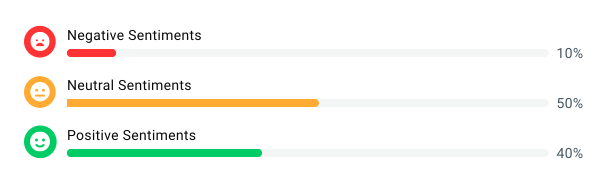

Feature 01
Sentiment Analysis

The Problem it solves
Managers had no way to know whether a call ended on a positive or negative note without listening to the whole recording.
Design Decisions
The Sentiment Analytics view surfaces three emotional states — Negative, Neutral, and Positive — each represented as a progress bar with a percentage score. The visual hierarchy is intentional: emoji-based icons make the three states instantly recognizable without reading labels. The bar lengths give managers a proportional sense of distribution at a glance — in this example, 65% neutral, 30% positive, and only 5% negative — so they can immediately judge team health and prioritize where coaching attention is needed.
Impact
The goal was to eliminate random call sampling entirely. Instead of managers guessing which calls to review, the Negative Sentiments flag surfaces exactly which calls need attention — without listening to a single recording.